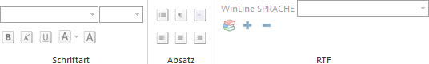
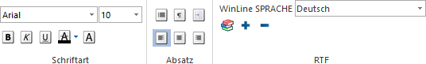
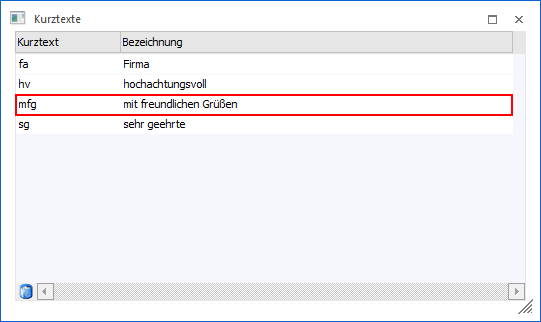
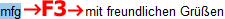

Textformatierung
Mit Hilfe des Bereichs "Textformatierung" kann definiert werden, wie der Text im Eingabefeld formatiert werden soll. Dabei kann die Schriftart, die Schriftgröße, die Attribute (wie fett, kursiv, unterstrichen) etc. verändert werden - wie man es von Textverarbeitungsprogrammen gewohnt ist.
Diese Formatierungen sind in normalen Eingabefelder nicht nutzbar. Aus diesem Grund werden die Buttons im Normalfall als nicht bearbeitbar dargestellt.

Erst wenn der Cursor auf ein sogenanntes "Multiline-Editfeld" - auch "RTF-Text-Feld" genannt - (jeweils ein Eingabefeld, wo viel Text hinterlegt werden kann) gesetzt wird, werden die Buttons bearbeitbar.

Hinweis
Durch die Aktivierung der Option "Richtext Elemente automatisch einblenden" (WinLine START- Parameter - Einstellungen… - Reigster "Allgemein") wird der Ribbon "TEXTFORMATIERUNG UND TOOLS" automatisch eingeblendet, wenn der Programm-Fokus in einem RTF-Text-Feld liegt.
Ø Schriftart
An dieser Stelle kann die Schriftart, die Schriftgröße sowie die Attribute für den Text gewählt werden.
Hinweis
Die Standard-Einstellungen für neuen Text können in den Einstellungen (WinLine START - Parameter - Einstellungen… - Feld "RTF Standardschriftart") hinterlegt werden.
Ø Absatz
In diesem Bereich können Absatzmarken, -formen sowie die Textbündigkeit definiert werden.
Durch Anwahl des Buttons "Wörterbuch" wird die Funktion der Autovervollständigung aktiviert. Das bedeutet, dass die WinLine anhand der eingegebenen Buchstaben versucht, das Wort aus dem vorhandenen Wörtervorrat zu vervollständigen.
Hinweis
Der Wörtervorrat kann neben der direkten Pflege während der Texterfassung auch im Programm WinLine START (Parameter - Wörterbuch) angelegt bzw. bearbeitet werden.
Ø  Wort hinzufügen
Wort hinzufügen
Mit dieser Funktion können neue Wörter ins Wörterbuch eingefügt werden. Hierfür wird das gewünschte Wort wird im laufenden Text markiert und durch Anklicken des Buttons "Wort hinzufügen" in das Wörterbuch aufgenommen.
Ø Wort entfernen
Mit dieser Funktion können Wörter aus dem Wörterbuch gelöscht werden. Hierfür wird das zu löschende Wort wird markiert und durch Anklicken des Buttons "Wort entfernen" aus dem Wörterbuch gelöscht.
Ø Wörterbuchsprache
Aus der Auswahlbox kann die Sprache gewählt werden, in welcher das Wörterbuch verwendet werden soll. Standardmäßig wird hier die Sprache vorgeschlagen, in welcher das Programm gestartet wurde, kann aber jederzeit geändert werden (wenn z.B. ein fremdsprachiger Text erfasst werden soll).
Unterstützung bei Texterfassung
Ø Autovervollständigung
Bei Aktivierung des Wörterbuchs werden passenden Wörter automatisch angezeigt und können per Pfeiltaste + Enter übernommen werden.

Ø STRG + Leertaste
Mit der Tastenkombination STRG + Leertaste wird eine Auswahlbox geöffnet, in welcher alle Wörter aus dem Wörterbuch angezeigt werden. Aus dieser Liste kann dann ein Wort ausgesucht und durch Drücken der Enter-Taste in das Eingabefeld übernommen werden.

Ø F3
Mit Hilfe der Taste F3 kann für markierte Textkürzel nach dem passenden ausgeschriebenen Text gesucht werden. Die Anlage von Kurztext und Bezeichnung erfolgt im Programm "Kurztexte" (WinLine START - Optionen - Kurztexte).
Beispiel
Für das Kürzel "mfg" existiert die Bezeichnung "mit freundlichen Grüßen".

Es wird das Kürzel "mfg" erfasst, markiert und die Taste F3 gedrückt
